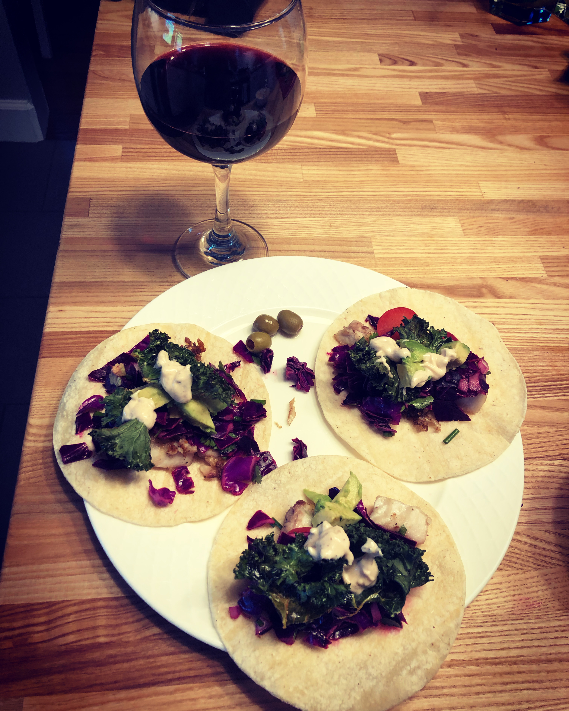
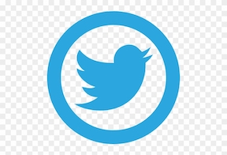

x

WHO WE ARE

We are a small diverse group of christ followers in the Inland Northwest, each with our own story of how we finally embraced small community as our church. We started gathering as friends in an informal setting in 2018. We did not know what God held for our future, and we still do not. We continue to seek his will, follow his lead, and to love and support each other in prayer and carrying personal joys and sorrows. Food is our thing, and we meet weekly to share food and life.
x
WHAT WE DO
- eat
- pray
- support
- give
x

HOW TO CONNECT
For now, email douglasjwood67@gmail.com more social media on its way, some day....
